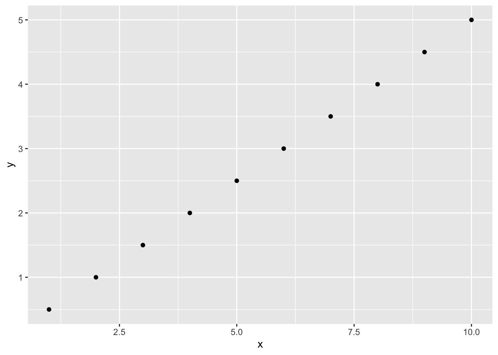

1 + 2[1] 3加減乗除は、それぞれ”+ - * /“の演算子でできます。
RStudioではコンソールに直接コマンドを打ち込んでReturnキーを押すか、あるいは新規のスクリプトファイルを開いて、そこにコマンドを入力してから同じ行でCtrl+Returnを押します。
背景に色が付いているところが打ち込むコマンド、その下がコマンドを入力した結果になります。
1 + 2[1] 3結果の先頭についている”[1]“はとりあえず気にしなくて構いません。
3 - 4[1] -15 * 6[1] 307 / 8[1] 0.875べき乗の演算子は、“^”です。
2^3[1] 8“%/%”は整数除算、“%%”は剰余です。
9 %/% 2[1] 49 %% 2[1] 1“<-”または”=“で、変数に値を代入できます。Rでは、変数はとくに宣言や型の指定は必要ありません。
a <- 1 + 2こちらでも同じです。
a = 1 + 2変数名そのままで値が表示されます。
a[1] 3print()関数で、明示的に変数の値を表示させることもできます。
print(a)[1] 3vector）Rでは、ベクトル（vector）はc()関数で作成できます。Rのベクトルは、数学的なベクトルのみならず、数列なども含みます。
c(1.2, 2.3, 3.4, 4.5)[1] 1.2 2.3 3.4 4.5“:”（コロン）は連続した数値（差が1または-1）からなるベクトルを生成する演算子です。
1:50 [1] 1 2 3 4 5 6 7 8 9 10 11 12 13 14 15 16 17 18 19 20 21 22
[23] 23 24 25 26 27 28 29 30 31 32 33 34 35 36 37 38 39 40 41 42 43 44
[45] 45 46 47 48 49 50ここで、[23]とか[45]とあるのは、ここからそれぞれ23番目と45番目の要素を表示するということをしめしています。
ダブルクォーテーション(")で文字を囲むと文字型になります。
"abc"[1] "abc"文字のベクトルもつくれます。
c("abc", "def", "ghi")[1] "abc" "def" "ghi"ベクトルの要素を取り出すには、“[]”を使用します。以下の例では、ベクトルaの2番目の要素を取り出します。Rの添え字は1から始まることに注意してください。
a <- c(3, 4, 5, 6, 2, 3, 4)
a[2][1] 4以下の例では、3番目から5番目までの要素を取り出します。
a[3:5][1] 5 6 2以下の例では、1番目と3番目の要素を取り出します。
a[c(1, 3)][1] 3 5以下の例では、1番目と2番目以外の要素を取り出します。
a[-c(1, 2)][1] 5 6 2 3 4matrix）行列（matrix）は、matrix()関数で作成します。以下の例では、1から6までの数値を2行3列の行列にしています。
X <- matrix(1:6, nrow = 2, ncol = 3)
print(X) [,1] [,2] [,3]
[1,] 1 3 5
[2,] 2 4 6デフォルトでは、列優先で要素が並びます。行優先にしたい場合は、matrix()関数の引数でbyrow = TRUEを指定します。
matrix(1:6, nrow = 2, ncol = 3, byrow = TRUE) [,1] [,2] [,3]
[1,] 1 2 3
[2,] 4 5 6行列の要素を取り出すには、ベクトルと同様に”[]“を使います。以下の例では、1行2列目の要素を取り出しています。
X[1, 2][1] 3行が先、列が後になることに注意してください。
行列の演算もできます。まずは加算です。
A <- matrix(1:6, nrow = 2, ncol = 3)
A [,1] [,2] [,3]
[1,] 1 3 5
[2,] 2 4 6当然ながら、行と列が一致していないとエラーになります。
B <- matrix(6:1, nrow = 2, ncol = 3)
B [,1] [,2] [,3]
[1,] 6 4 2
[2,] 5 3 1A + B [,1] [,2] [,3]
[1,] 7 7 7
[2,] 7 7 7減算です。
B - A [,1] [,2] [,3]
[1,] 5 1 -3
[2,] 3 -1 -5行列の転値には”t()“関数を用います。
C <- t(B)
C [,1] [,2]
[1,] 6 5
[2,] 4 3
[3,] 2 1乗算です。行列の乗法演算子は”%*%“です。
A %*% C [,1] [,2]
[1,] 28 19
[2,] 40 28演算子の左側の行列の列数と、右側の行列の行数が一致していないとエラーになります。
C %*% A [,1] [,2] [,3]
[1,] 16 38 60
[2,] 10 24 38
[3,] 4 10 16“*”は要素ごとの乗算になります。
A * B [,1] [,2] [,3]
[1,] 6 12 10
[2,] 10 12 6factor）因子(factor)は、ベクトルに似ていますが、要素となるもの（水準）が決まっているデータ構造です。factor()関数で作成できます。
factor(c("リンゴ", "ミカン", "ブドウ", "イチゴ", "リンゴ"))[1] リンゴ ミカン ブドウ イチゴ リンゴ
Levels: イチゴ ブドウ ミカン リンゴ結果で”Levels”と表示されるのが水準です。
因子は名義尺度に対応するものです。名義尺度とは、名前だけのデータで、値に大小関係がないものです。たとえば、果物の名前は、イチゴ・ブドウ・ミカン・リンゴなどのように、名前だけであって、数値的な大小関係はありません。
これがたとえば、“非常に悪い”・“悪い”・“普通”・“良い”・“非常に良い”などのように、順序がある場合は、順序尺度と呼ばれます。順序尺度の変数はRではordered関数で作成できます。levels引数で水準と順序を指定します。
A <- ordered(c("良い", "悪い", "普通", "良い", "非常に良い"),
levels = c("非常に悪い", "悪い", "普通", "良い", "非常に良い"))
print(A)[1] 良い 悪い 普通 良い 非常に良い
Levels: 非常に悪い < 悪い < 普通 < 良い < 非常に良いこれは、factor()関数で、ordered = TRUEを指定しても同様です。
A <- factor(c("良い", "悪い", "普通", "良い", "非常に良い"),
levels = c("非常に悪い", "悪い", "普通", "良い", "非常に良い"),
ordered = TRUE)
print(A)[1] 良い 悪い 普通 良い 非常に良い
Levels: 非常に悪い < 悪い < 普通 < 良い < 非常に良い大小関係があるので、比較ができます。以下では、A[1]が”良い”、A[2]が”悪い”なので、A[1] > A[2]は真になります。TRUE/FALSEの論理型についてはあとで説明します（セクション 3.4）。
A[1] > A[2][1] TRUEそのほかの変数尺度には、間隔尺度と比例尺度があります。間隔尺度は、数値の変数で、大小関係はありますが、0にはとくに意味がないものです。例えば、摂氏の温度では、0度は氷点ですが物理的には0というわけではありません（絶対零度とは違います）。そのため摂氏10度は摂氏5度の2倍というわけではありません。
比例尺度は、0に意味があるもので、長さや質量などが該当します。これらの0は物理的に0であり、また、たとえば、10cmは5cmの2倍ということができます。
間隔尺度も比例尺度も、Rでは数値で表現されます。
Rの基本のデータ型は、論理型（logical）、整数型（integer）、倍精度小数点型（double）、文字型（character）の4つです。実際にはもっとほかの型もありますが、リスト型(list)以外はユーザーレベルではあまり使わないでしょう。リスト型は後で説明します。
論理型は真偽値に対応するもので、TRUE（真）またはFALSE（偽）の値だけをとります。下の例では、“==”が「等しい」の比較演算子なので、結果はTRUEになります。
1 == 1[1] TRUE以下の例では、1は2よりも大きくないので、結果はFALSEになります。
1 > 2[1] FALSEtypeof()関数で型を調べることができます。
typeof(1 > 2)[1] "logical"整数型と倍精度小数点型はいずれも数値です。明示的に整数型を指定するときは数字の後に”L”をつけます。
typeof(3L)[1] "integer"そうしないと倍精度小数点型になる場合があります。
typeof(3)[1] "double"文字型では以下のようになります。
typeof("ABC")[1] "character"ベクトルや行列、因子などは、このようなデータ型を要素として持つデータ構造（クラス）となります。
list）リストは、異なる型の要素を持つことができるデータ型です。list()関数で作成します。以下の例では、1番目の要素に論理型、2番目の要素に数値ベクトル、3番目の要素に文字ベクトルを持つリストを作成しています。
list(TRUE, 1:3, c("A", "B", "C", "D"))[[1]]
[1] TRUE
[[2]]
[1] 1 2 3
[[3]]
[1] "A" "B" "C" "D"要素には名前を付けることもできます。
L <- list(a = TRUE, b = 1:3, c = c("A", "B", "C", "D"))
print(L)$a
[1] TRUE
$b
[1] 1 2 3
$c
[1] "A" "B" "C" "D"リストの要素を取り出すには”[[ ]]“を使います。以下の例ではリストLの2番目の要素を取り出しています。
L[[2]][1] 1 2 3要素に名前がついているリストの場合は名前を使うこともできます。
L[["b"]][1] 1 2 3これは”$“を使ってより簡単に書けます。
L$b[1] 1 2 3data frame）データフレーム（data frame）はリストの1種ですが、要素の長さがすべて同じで、行列や表のようになっているのが特徴です。各要素が列（変数）となり、行が観測に対応します。リストですので、要素の型は異なっていてもかまいません。
データフレームは、Rの統計計算では、もっともよく使われる基本的なデータ構造です。
以下の例では、名前・年齢・身長を変数として、4人分のデータからなるデータフレームを作成しています。データフレームは、data.frame()関数で作成します。
df <- data.frame(name = c("山田", "佐藤", "鈴木", "田中"),
age = c(25, 27, 30, 33),
height = c(170, 160, 175, 165))
print(df) name age height
1 山田 25 170
2 佐藤 27 160
3 鈴木 30 175
4 田中 33 165リストと同様の記法で、各列を取り出すことができます。
1番目の要素（列）を取り出します。
df[[1]][1] "山田" "佐藤" "鈴木" "田中"以下のようにも書けます。
df$name[1] "山田" "佐藤" "鈴木" "田中"取り出されたものはベクトルになっていますので、さらにその中の要素を取り出すこともできます。
df$name[2][1] "佐藤"あるいは、行列のように行と列を指定することもできます。行の指定の方が先ということに注意してください。
df[2, 1][1] "佐藤"2行目だけを取り出すなら、以下のように書きます。
df[2, ] name age height
2 佐藤 27 160以下のように書くと、1〜2列目を取り出すことができます。
df[, 1:2] name age
1 山田 25
2 佐藤 27
3 鈴木 30
4 田中 33これまでにも関数をいくつか利用してきましたが、ここであらためて関数の呼び出し方法について説明しましょう。基本的には、関数名(引数名1 = 値, 引数名2 = 値,...)という形で関数を呼び出します。
X <- matrix(1:6, nrow = 2, ncol = 3, byrow = TRUE)関数にどのような引数があるのかは、help()関数で調べることができます。
help(matrix)これは、以下のようにしても同様です。
?matrixRStudioではヘルプのタブにヘルプが表示されます。Usageのところに以下の説明が出ます。
matrix(data = NA, nrow = 1, ncol = 1, byrow = FALSE,
dimnames = NULL)その下のArgumentsに引数の詳細な説明があります。matrix()では、
dataは、行列にするデータのベクトルで、デフォルト値はNA（欠損値）となっています。
この説明のとおり、matrix()関数ですべての引数を省略してデフォルト値で行列を作成すると以下のようになります。
matrix() [,1]
[1,] NARの関数呼び出しでは、定義された順番どおりなら引数名を省略できます。以下はmatrix(data = 1:6, nrow = 2, ncol = 3, byrow = TRUE)と同じです。
matrix(1:6, 2, 3, TRUE) [,1] [,2] [,3]
[1,] 1 2 3
[2,] 4 5 6引数名は区別がつくところまで省略することもできます。また、引数名をつければ順番を入れ替えることもできます。
matrix(by = TRUE, nc = 3, nr = 2, dat = 1:6) [,1] [,2] [,3]
[1,] 1 2 3
[2,] 4 5 6ただ、あまりやりすぎるとわかりにくくなります。最初の1つ目あるいは2つ目までの引数は順番で指定して、あまり使われないような引数は完全な引数名を指定することが推奨されています。今回の場合では以下のようになるでしょうか（nrowとncolも省略してよいかもしれません）。
matrix(1:6, nrow = 2, ncol = 3, byrow = TRUE) [,1] [,2] [,3]
[1,] 1 2 3
[2,] 4 5 6統計解析にRを使用することの利点のひとつは、豊富なパッケージを利用できることです。
パッケージとは、R本体にはない解析手法や、グラフィック環境、データなどをひとまとまりにまとめて扱えるようにしたものです。パッケージは、ユーザーが自分で作成して公開することもできます。そのため、非常にたくさんのパッケージを利用することができます。
CRANには2万を超えるパッケージが登録されています。CRAN Task Viewsでは、さまざまな分野について、よく使われるパッケージを紹介しています。
CRANのほかにもパッケージを登録しているところがあります。Bioconductorでは生物情報学関連のパッケージを集めています。
このほか、GitHubなどで作者が独自に公開しているパッケージもあります。検索エンジンで探してみたり、AIに尋ねてみたりするのもよいでしょう。
CRANからパッケージをインストールするには、install.packages()関数を使用します。以下の例ではggplot2パッケージをインストールしています。“dependencies = TRUE”という引数をつけると、依存パッケージも同時にインストールされます。
install.packages("ggplot2", dependencies = TRUE)RStudioでしたら、メニューの Tools > Install Packages… からインストールすることもできます。
library()関数でパッケージを読み込みます。下の例ではggplot2パッケージを読み込んでいます。ggplot2パッケージは、統一された文法でグラフを作成できるパッケージです。
library(ggplot2)これによりggplot2パッケージの関数が使えるようになります。以下ではggplot2を用いて散布図を描画しています。
ggplot(data.frame(x = 1:10, y = (1:10) * 0.5),
aes(x, y)) +
geom_point()